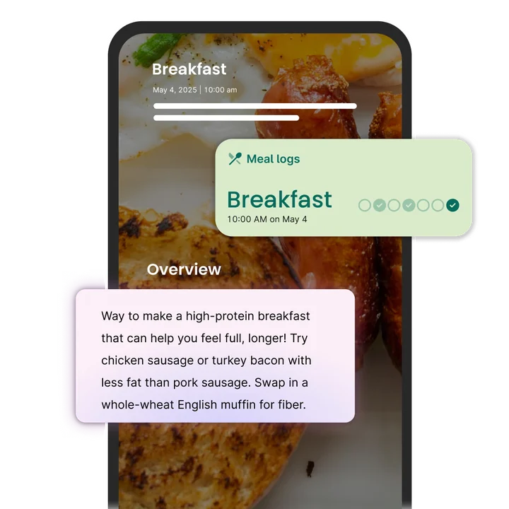
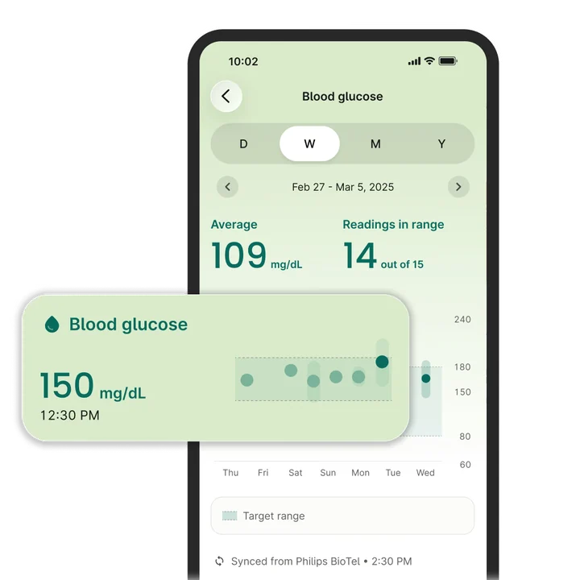
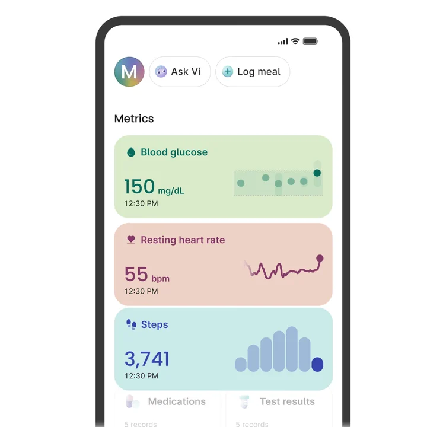
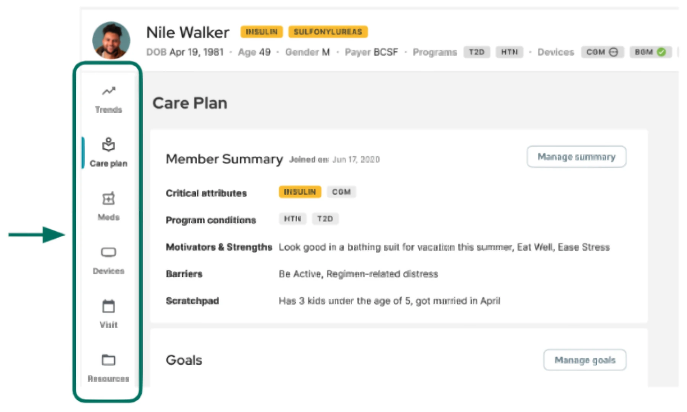

Core needs
Both sides of the platform
What patients and clinicians need, measured and ranked.
Case study · Verily Lightpath · 2021 to 2025 Draft · highlighted text is placeholder
Verily Lightpath is a care program for chronic conditions in the Verily Me app. I aligned senior leaders on its three-year vision, then helped define and evaluate an LLM capability that summarizes member records and suggests next-best clinical actions.
Situation
Task
Establish core patient and clinician needs and the openings to stand apart, align senior stakeholders on a three-year vision, and evaluate the first AI-enabled clinical workflow.
Core needs
What patients and clinicians need, measured and ranked.
A shared vision
Product director, head of commercial and clinical leadership behind one plan.
A faster workflow
An LLM summary that shortens visit prep and points to the next step.
Action
Phase 1 · Needs and vision
Interviews and a survey with patients and clinicians, then vision workshops with the product director, head of commercial and clinical leadership.
Phase 2 · Iterative evaluation
Physicians, nurse practitioners and health coaches used the record summary on real case types, round by round, with product analytics tracking time to action.
Findings
Clinicians described spending a third of each visit's time reading notes to rebuild the patient's story.
A recommendation was used only when the clinician could see which notes and results it came from.
Health coaches wanted goals and habits; physicians wanted changes in medication, labs and risk.
“If it tells me what changed since last time and where it read that, I'll use it every day.”
Recommendations
| Recommendation | Why | What it looks like |
|---|---|---|
| Summary by role | Coaches and physicians look for different things. | Separate views for coaching goals and clinical changes. |
| Next-best action | Prep time crowds out care. | One suggested next step per patient, with the reason in a line. |
| Source on demand | Trust needs a source. | Every statement links to the note or result behind it. |
What launched
“Clinical resourcing is purposefully matched to a member’s clinical need.”
Medical provider coverage in all 50 states, with Vi, the AI companion, supporting members 24/7 between touchpoints.
Type 1 diabetes, type 2 diabetes with an A1c above 8%, or blood pressure above 130/80, including comorbidities
Pathways cover type 1 and type 2 diabetes, prediabetes, weight management, hypertension and hyperlipidemia.
What launched · the member’s side



Simulated product views, from verily.com
What launched · the care team’s side

A member’s plan opens with what to know before reaching out: critical attributes such as insulin use, program conditions, motivators, barriers and a shared scratchpad.
The side rail keeps every view of the member one click away.
![Two care console screens joined by arrows. Trends shows tiles for A1c (9.6%, above goal), glucose (last week, 1 reading in range per day against a goal of 2) and blood pressure (last week, 126/78, elevated). Clicking the glucose tile opens a Glucose view with Daily and Weekly tabs: average CGM glucose of 118 mg/dL, total time in range of 11 hours 30 minutes a day against a goal of 24 hours, 2 readings in range against a goal of 2 out of 3, and 4,829 steps against a goal of 6,500, with a Create provider report button.](assets/img/console-trends.webp)
Trends lead with A1c, glucose and blood pressure, each against the member’s goal. One click opens glucose by day or week: average CGM glucose, time and readings in range, and steps, each against its goal, with a provider report a click away.
This click-through is the prep the LLM record summary was built to shorten.
Screens from the care console, with illustrative member data. Select an image to see it full size.
Result